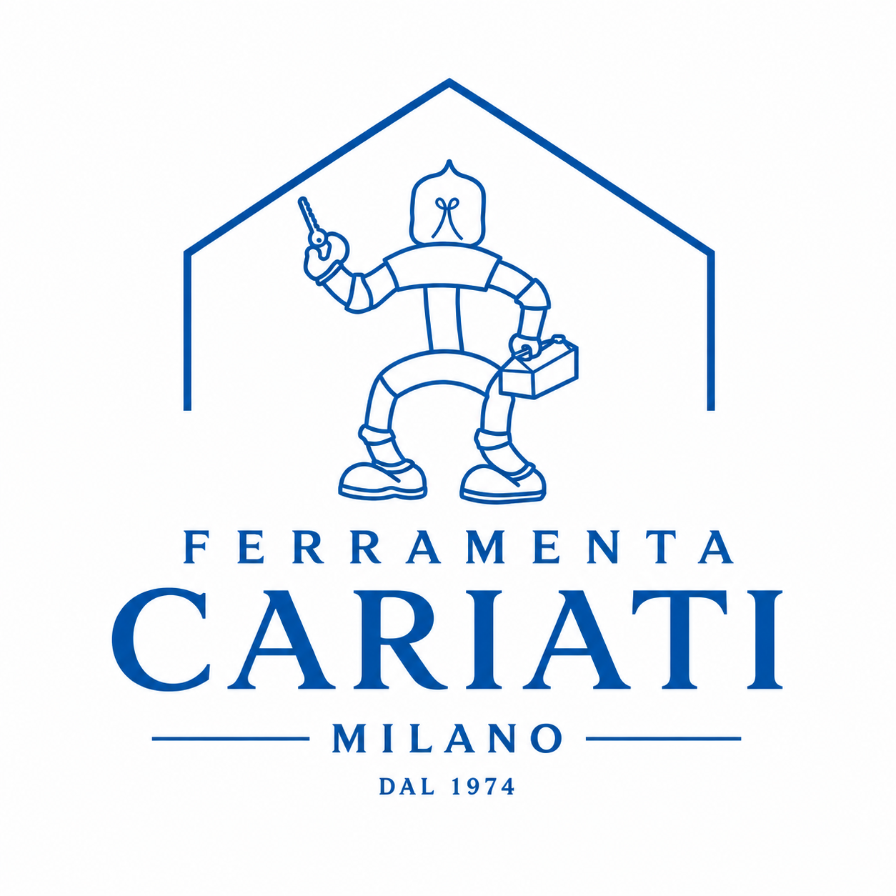
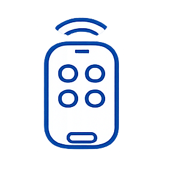
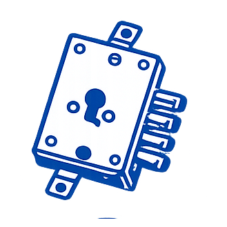
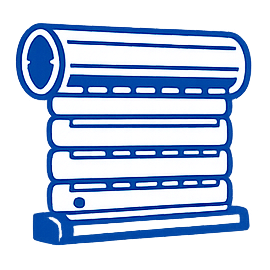
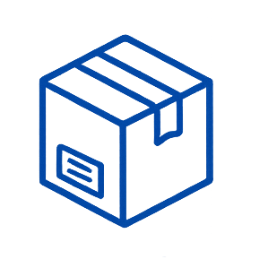
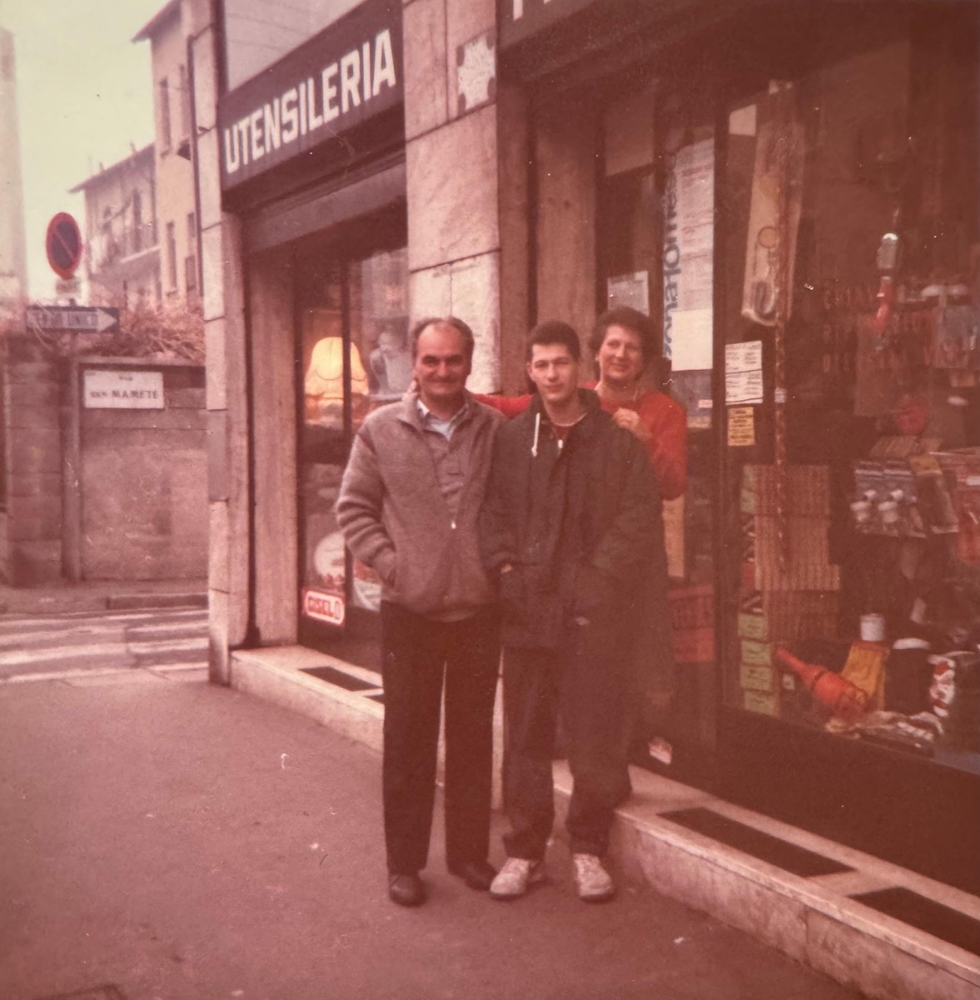
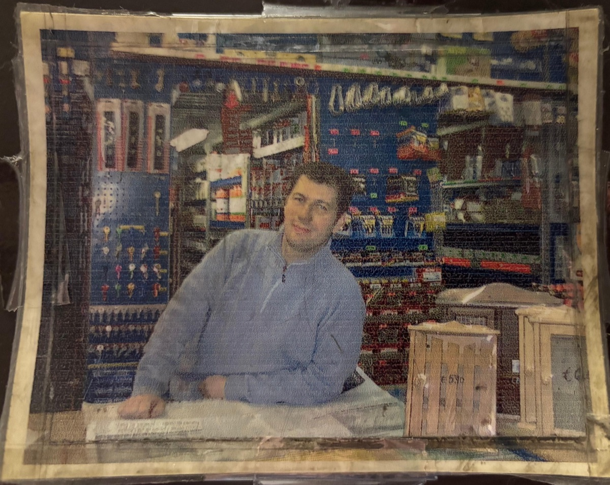
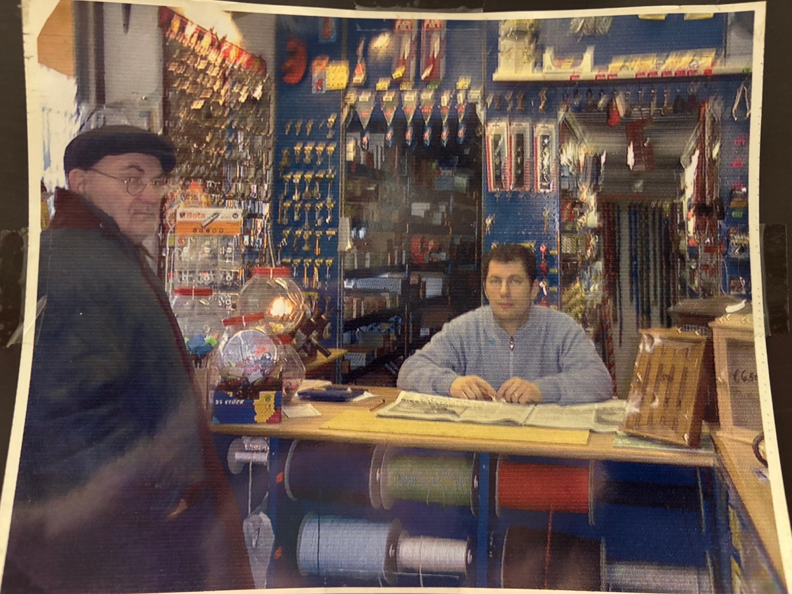
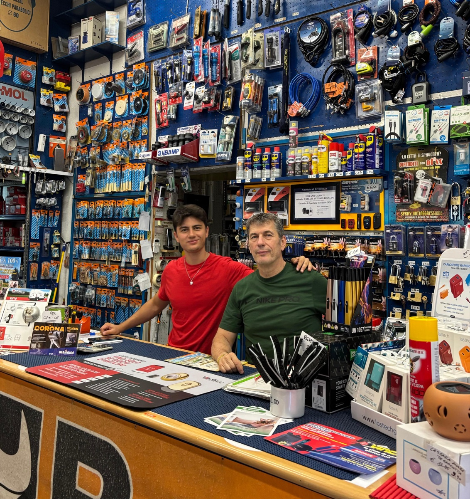
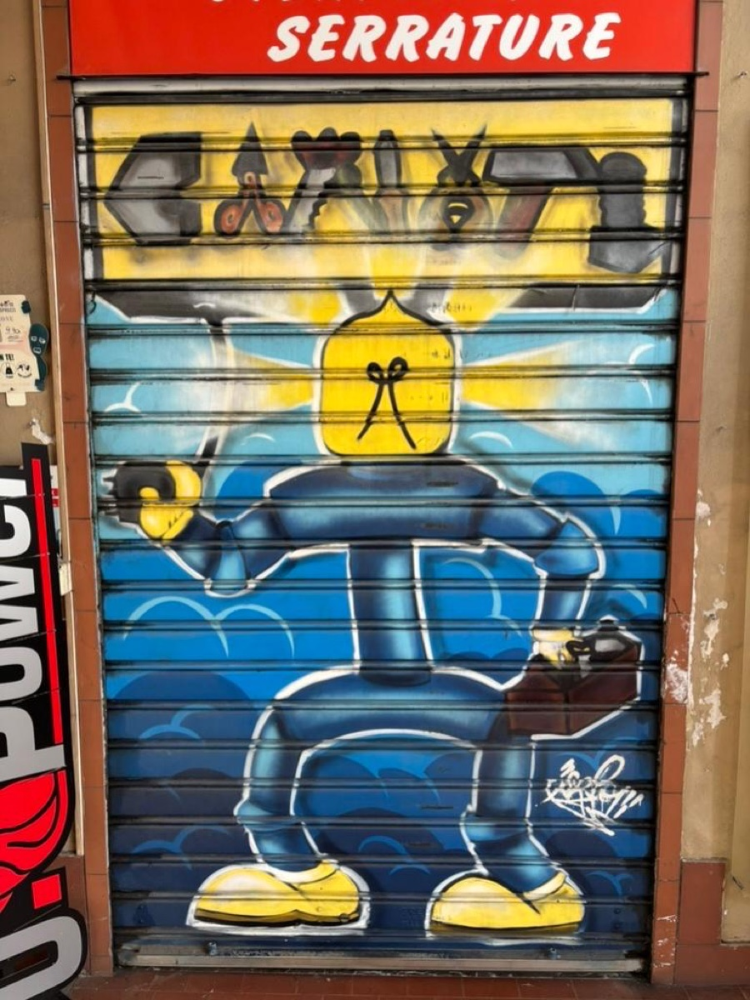

Duplicazione chiavi
Chiavi universali, doppia mappa, punzonate, a duplicazione protetta, chiavi magnetiche Disec MR500, chiavi per moto, scooter e auto, anche con comando a distanza e keyless.

Da tre generazioni al servizio del quartiere.
Sempre a disposizione per casa, azienda e condominio.
Chiavi universali, doppia mappa, punzonate, a duplicazione protetta, chiavi magnetiche Disec MR500, chiavi per moto, scooter e auto, anche con comando a distanza e keyless.

Duplicazione telecomandi per cancello e box.

Sostituzione cilindri e serrature, unificazione cilindri e apertura serrature.

Riparazioni, motorizzazioni per tapparelle e sostituzione cinghie.

Punto di ritiro UPS, BRT e Fermopoint, con locker GLS.
Affilatura professionale di coltelli e forbici.
Sostituzione pile per telecomandi, targhette personalizzate, zerbini su misura e targhette per citofono.
Dal lavoro alla casa, trovi articoli scelti per risolvere esigenze quotidiane. Ti aspettiamo in Via Adriano 8, Quartiere Adriano, per consigliarti il prodotto più adatto.
Scarpe antinfortunistiche, guanti, caschi, dispositivi di protezione e abbigliamento da lavoro. Prodotti pensati per chi lavora in sicurezza ogni giorno.
Serrature, cilindri europei, lucchetti, casseforti, cassette lettere e accessori di sicurezza. Ti orientiamo nella scelta dei prodotti più adatti per porte, cancelli e ingressi.
Chiavi, pinze, cacciaviti, brugole, fascette, viti, bulloni, tasselli e minuteria per lavori quotidiani. Una selezione pratica per casa, manutenzione e piccole riparazioni.
Detergenti tecnici, prodotti HG, sbloccanti, oli, grassi e lubrificanti per manutenzione ordinaria, pulizia profonda e cura di serrature, utensili e meccanismi.
Smalti spray, pitture lavabili, siliconi, sigillanti, colle, nastri e prodotti per fissare, proteggere e rifinire superfici interne ed esterne.
Trapani, punte, inserti, dischi, lame, abrasivi e accessori per utensili elettrici. Trovi soluzioni utili per forare, tagliare, levigare e montare con precisione.
Rubinetti, guarnizioni, giunzioni in ottone, doccini, docciatori, flessibili e accessori per piccoli interventi su bagno, cucina e impianti di casa.
Adattatori, spine, prese, cavi, prolunghe, lampadine, torce, pile e batterie. Articoli semplici e affidabili per sistemare impianti domestici e punti luce.
Vasi, terriccio, fertilizzanti, cesoie, annaffiatoi, tubi per l'acqua, avvolgitubo e tagliaerba su ordinazione. Ti aiutiamo a scegliere l'articolo giusto per balconi, cortili e piccoli giardini.
Reti, zanzariere, scale, accessori da esterno e soluzioni per balconi, cortili, finestre e piccoli lavori fuori casa. Disponibilità e misure vengono valutate in negozio.
Accessori per auto, bici e moto, piccoli ricambi, prodotti di manutenzione e articoli per enologia. Soluzioni utili per garage, cantina e tempo libero.
Tovagliati, passatoie, pentole, coltelli, forbicine, pinzette, contenitori e articoli utili per la casa. Una scelta pratica per le necessità di tutti i giorni.
Prodotti affidabili per interventi quotidiani e lavori professionali.
Da Ferramenta Cariati duplichiamo diversi tipi di chiavi: universali, doppia mappa, punzonate e chiavi a duplicazione protetta con tessera.
Da Ferramenta Cariati duplichiamo chiavi per auto, moto e scooter, anche con telecomando e sistemi keyless.
Da Ferramenta Cariati trovi scarpe antinfortunistiche, magliette, pantaloni, caschi, guanti e articoli per la sicurezza sul lavoro.
Contattaci e inviaci una foto della serratura. Possiamo aiutarti con sostituzione di cilindri, serrature e apertura porte.
Sì, possiamo metterti in contatto con professionisti come fabbri, elettricisti e falegnami.
Da Ferramenta Cariati trovi prodotti professionali per pulizia, manutenzione e scarichi, adatti alla casa, al condominio e al lavoro.
Ferramenta Cariati è aperta anche ad agosto. Puoi controllare gli orari aggiornati su Google o contattarci prima di passare.
Da Ferramenta Cariati siamo punto spedizione e ritiro per diversi corrieri, tra cui BRT, Fermopoint, UPS e GLS tramite locker.
Da Ferramenta Cariati duplichiamo telecomandi per cancelli, box e automazioni compatibili.
Da Ferramenta Cariati offriamo servizio di affilatura per coltelli da cucina e forbici.
Da Ferramenta Cariati trovi esche, trappole e prodotti specifici per topi, scarafaggi e insetti striscianti.
Da Ferramenta Cariati abbiamo diversi tipi di pile e batterie. Portaci il tuo dispositivo e ci occupiamo noi della sostituzione delle pile.
Da Ferramenta Cariati trovi vasi, terriccio, fertilizzanti, tubi per l'acqua, avvolgitubo e accessori per balconi, cortili e piccoli giardini.
In Ferramenta Cariati trattiamo accessori e ricambi per tapparelle, veneziane e cinghie. Chiamaci per un consulto con i nostri tecnici tapparellisti per riparazioni e sostituzioni.
Da oltre cinquant’anni, Ferramenta Cariati è un punto di riferimento per chi vive e lavora nel quartiere Adriano a Milano. Una ferramenta di famiglia, nata dal lavoro quotidiano e cresciuta insieme alle esigenze dei suoi clienti, generazione dopo generazione.
La nostra storia inizia nel 1974, quando i coniugi Algisi Ottimia e Carlo Cariati rilevano la ferramenta di Via Adriano 4, dandole il nome di ServoCà. In quegli anni il negozio era dedicato soprattutto alla ferramenta di base e ai casalinghi: una bottega di quartiere nel senso più autentico del termine.

Nel 1990 la ferramenta si trasferisce poco più avanti, in Via Adriano 8, in uno spazio espositivo più ampio. È in questa fase che Antonello Cariati, figlio dei fondatori, prende in mano l’attività e ne accompagna l’evoluzione. Nel 1991 il nome ServoCà viene dismesso e l’insegna diventa Ferramenta Cariati, rafforzando il legame tra il negozio, la famiglia e il quartiere.

Sotto la guida di Antonello, l’offerta si amplia progressivamente con nuove categorie come colorificio, elettricità e idraulica. Allo stesso tempo, il negozio cambia insieme al mercato, gli spazi un tempo dedicati alle liste nozze lasciano il posto a un magazzino più ricco di utensileria, prodotti per la sicurezza e articoli tecnici, pensati per rispondere alle esigenze di privati, professionisti e aziende.

Nel tempo, questa capacità di adattarsi ha permesso a Ferramenta Cariati di consolidare collaborazioni di fornitura con diverse realtà storiche di Milano, mantenendo però intatta la propria identità; quella di una ferramenta familiare, radicata nel quartiere, dove ogni giorno le persone trovano non solo prodotti, ma anche consigli competenti e soluzioni pratiche pensate per le loro esigenze, grazie alla competenza maturata ogni giorno al banco.

Oggi Ferramenta Cariati è arrivata alla terza generazione. Antonello lavora insieme al figlio Stefano, che ha introdotto nuove competenze specialistiche nella duplicazione di ogni tipo di chiave, incluse chiavi auto e sistemi keyless, e nei servizi per la sicurezza. Dall’apertura tecnica di serrature blindate alla sostituzione dei cilindri, fino alle unifiche, l’obiettivo resta quello di sempre: offrire un servizio affidabile, preciso e vicino alle persone.
Ferramenta Cariati è la ferramenta della famiglia Cariati da tre generazioni. Ma soprattutto è una ferramenta di quartiere: un luogo dove trovare prodotti, servizi e consigli, con la fiducia di chi c’è da sempre e continua a guardare avanti.

"Lavoriamo nella meccanica di precisione e tecnologie avanzate al servizio di progettazioni particolari e specifiche. Creiamo dei supporti che poi serviranno per progettare grosse situazioni, strumenti di precisione per una svolta futura della meccanica... in pratica abbiamo una ferramenta."